report
2026.3.30 Hybrid neural–cognitive models reveal how memory shapes human reward learning — Nat Hum Behav (2026)
背景
经典强化学习模型通常假设，个体会根据 trial-by-trial 的经验逐步更新少量内部状态变量，并据此调整后续选择。以 Q-learning 为例，过去的奖励历史被压缩到各动作对应的 Q 值之中，模型通过增量式更新不断修正这些价值估计。
这样的建模方式结构清晰、机制透明，在解释人类与动物的学习行为方面取得了非常重要的成功。然而，这类模型也隐含了一个较强的假设：过去经验可以被充分概括为少量、低维、可递推更新的摘要性变量，而不需要保留更丰富的具体记忆内容。
例如，既有研究表明，过去的某些个体事件会对后续行为产生不成比例的影响，这说明任务相关记忆所保留的信息并不只是类似 Q 值的奖励历史汇总统计量。此外，行为往往还对过去经验中的全局统计结构敏感，例如奖励范围或可选项目的分组方式，而这些因素通常难以被标准强化学习模型自然刻画。最后，已有神经层面的证据显示，先前被认为直接对应 Q 值的信号实际上呈现出显著的多样性，这进一步表明真实学习过程中所依赖的内部表征，可能比经典强化学习模型所假设的低维价值变量更加复杂。
一个有助于直观理解这一限制的例子是味觉厌恶学习。
动物可能只经历一次“某种味道—随后出现强烈不适”的配对，之后便长期回避这种味道。这说明，过去经验并不总是被平滑地平均压缩进一个缓慢变化的标量之中；在某些情况下，单个事件本身就可能被强力而持久地保留下来。
这个例子并不直接来自本文的实验任务，但它有助于说明：生物体在学习中所利用的记忆表征，未必总能被经典 RL 模型中的低维价值变量充分刻画。
与此相对，人工神经网络，尤其是循环神经网络，可以通过隐藏状态在序列处理中持续保留、整合并变换过去的信息，因此在刻画复杂时序依赖方面具有更强的表达能力。
在本文所研究的 reward-learning 数据上，这类模型相较于最佳经典 RL 模型也表现出更高的预测精度。
然而，神经网络的内部表征通常由大量参数通过数据驱动方式共同形成，其计算过程虽然灵活，却往往缺乏经典认知模型那样直接而明确的可解释性。
因此，一个自然的问题是：如果经典 RL 模型过于受限，难以充分解释人类行为，而更灵活的 ANN 又虽然拟合更好却难以揭示机制，那么是否可以构造一类介于两者之间的混合模型？这类模型既保留认知模型清晰的结构划分，又在关键计算环节引入 ANN 的灵活性，从而在提高行为拟合能力的同时，仍然使解释工作保持在可处理的范围内。
本文正是沿着这一思路展开的。作者并不是简单地用人工神经网络替代经典 RL，而是构造了一系列位于两者之间的 hybrid neural–cognitive models：以经典 RL 架构为起点，逐步放松其中的不同约束，并用 ANN 替换相应模块，从而系统考察究竟是哪一类额外机制，能够显著提升模型对人类行为的预测能力。换言之，本文关心的并不仅仅是“哪种模型拟合更好”，而是经典 RL 模型在哪些方面已经足够、在哪些方面仍然受限，以及人类 reward learning 是否需要比增量式标量价值更新更丰富的记忆与计算机制。
我认为这个研究的科学问题是：
在人类 reward-guided learning 中，驱动行为的核心机制到底是经典 RL 式的低维增量价值更新，还是一种能够在多时间尺度上保留 reward history 与 action history 的灵活记忆系统。
实验任务
本研究的实验任务是较为简单的，玩家需要操纵一个四臂的老虎机，每次可以按下一个按键（D/F/J/K）,每个trial，被试在做出动作之后会获得一个奖励分数，目标是最大化自己的得分。一个block是150trial，四秒时间限制（超时为0分），反馈或超时后进入下一trial。
在这里我们还需要了解一下动作和奖励之间的关系。
动作的奖励会随时间漂移，对于每个动作，它在第t个trial有一个潜在的平均奖励，记为
我们先按照一个带均值回归的Gaussian random walk漂移，再从这个均值周围采样实际的奖励
如果没有均值回归，那就是：
意思是每一步都在原值基础上加一个高斯噪声。
这种机制的问题是：时间久了以后， 可能越漂越远，跑到很极端的地方，不太稳定。
所以我们加上一个均值回归，使其每一次迭代都会往回拉一点。
其中
- 是长期中心，或者说“回归均值”（那么这里其实是50）
- 控制回拉强度
- 是高斯扰动
潜在均值更新完之后，再从它周围采样这次 trial 的实际奖励：
也就是说，
这里：
- 是这个动作在当前时刻的“真实平均水平”
- 是观测噪声
- 控制单次奖励有多不稳定
也就是这里有两层随机过程，从而使得这个任务富于变化，增加其难度。
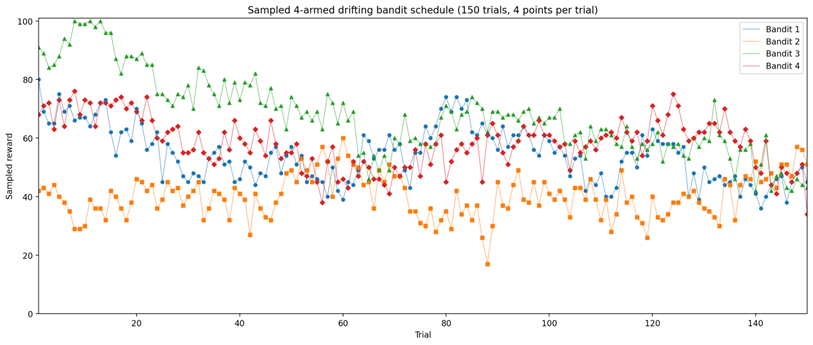
我们有理论最优的行为构成的动作组合，也有每局四个动作的得分均值，为了使得得分具有跨trial的可比较性，我们定义一个相对得分。
其中是该轮四个动作的可得奖励集合。
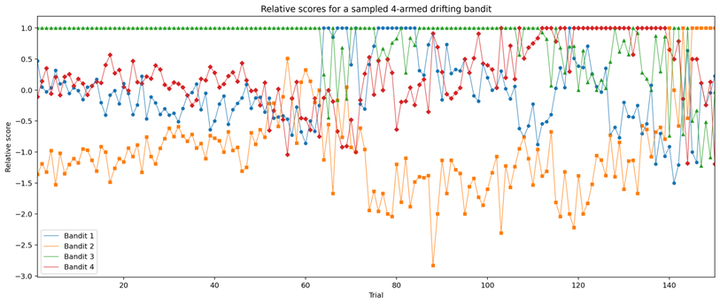
那么我们的目的就是，构造一系列模型拟合人类在这一任务上的表现，并对它们的拟合效果进行解释。
这些模型的训练目标不是学习该任务的最优策略，而是通过最大化人类选择序列在模型下的似然（在具体实现是通过最小化负对数似然或交叉熵损失），去拟合人类实际的决策规律。
该研究基于一个大规模在线行为数据集：共纳入 862 名有效参与者，包含 4,134 个任务模块和 617,871 次有效试验，数据规模已与该类任务中现有最大数据集相当。
他们把参与者而不是单个 trial 随机分成三部分，80% 的参与者用于训练，10% 用于验证超参数，10% 用于最终测试。所有模型都在同一批训练参与者上学习参数，然后在验证参与者上选比如 hidden units 这类超参数，最后拿去预测从未见过的测试参与者的行为。
文中通过验证集选择的超参数主要包括优化器学习率、L2 正则、batch size 和隐藏单元数；此外还在不超过 100 万步的范围内选择最佳训练步数。对没有隐藏层的经典 RL，hidden units 不适用；对 ANN、RNN 和 hybrid 模型则需要一起搜索。
即
其中历史项一般定义为
这里主要是基于所有训练被试的数据来训练一个 population-level model。
作者还专门强调，这种按参与者做 cross-validation 的方式，可以避免更灵活的模型只是在记住训练数据，同时也让不同复杂度的模型能直接比较。（或者可以说，数据和数据之间的变异性更大）
建模
在这一框架下，作者并非简单对比经典 RL 与人工神经网络，而是构造了一系列位于两者之间的模型：以经典 RL 为起点，逐步放松其结构约束，并在不同计算模块中引入神经网络，从而形成一条由“完全可解释”到“高度灵活”的模型谱系。通过比较这些模型在未见被试数据上的预测表现，可以进一步分析，究竟是哪一类额外机制，使模型更接近人类的行为模式。
需要说明的是，下面关于经典 RL 从 Simple RL 到 Best RL 的展开顺序，是一种便于理解的重构方式；论文真正采用的是对多种 Q-learning 变体的系统比较，并最终从中选出表现最好的 handcrafted RL 模型。
经典RL模型
起点
作者首先从一个最简单的 RL 基线模型出发，文中将其称为 Simple RL。它是一个表格式的 Q-learning 模型，只包含两个自由参数：学习率 和逆温度 。
其中， 决定当前奖励反馈对所选动作价值更新的幅度， 决定 softmax 选择规则对价值差异的敏感程度： 越大，模型越倾向于选择当前价值更高的动作； 越小，各动作的选择概率越接近均匀分布。
正文方法部分将只由标准 Q-learning 更新和 softmax 选择组成的两参数模型称为 Basic RL；而在结果部分，作者将作为起点的这一最简单模型称为 Simple RL。两者在这里指向的是同一类最基本的两参数 Q-learning 基线。
在每个 trial 上，模型维护四个动作对应的 Q 值，并依据这些 Q 值生成下一步选择的概率分布。其基本流程可以概括为：
- 为各动作赋予共同的初始价值，但在这一最简单版本中，这个初始值并未被单独当作自由参数来拟合。
- 根据当前值经 softmax 得到各动作的选择概率分布。
- 在概念性的生成式描述中，可以再从这一分布中采样动作；
- 但在本文的实际拟合过程中，更重要的是对**人类已经做出的动作**赋予概率，并以人类真实选择为条件更新模型状态、计算似然损失。
- 这种做法在操作上类似于 **teacher forcing / closed-loop**，而不是让模型完全依据自身采样的动作前向展开。
3. 观察到奖励后，模型用标准的 delta-rule 更新与该人类实际选择动作对应的 Q 值；在这一最简单版本中，未被选择动作的 Q 值保持不变。
作者先用这一最小模型去拟合人类行为，并将其作为后续所有 RL 扩展的参照基线。
- 从认知假设上看，Simple RL 假定过去经验可以被压缩进一组低维的、逐 trial 递推更新的 Q 值之中；动作选择只依赖当前的这些价值估计。
- 这种模型结构清晰、可解释性强，但也意味着它没有为更复杂的历史依赖、动作惯性或未选动作的动态变化预留空间。
第一步放松：加入 update bias
在最简单的 Q-learning 中，被选动作的更新完全由 prediction error 决定；但为了与后续神经网络模型的表达自由度更公平地比较，作者允许经典 RL 也拥有一个额外的更新偏置项 。这一修改并没有改变模型的整体结构，只是让价值更新在严格的 delta-rule 之外，多了一点可调的平移自由度。正文方法部分将这一扩展明确写成
其中 提供了线性的更新偏置。补充材料中的比较表明，这一步确实带来了一定改进：相较于最基本的两参数版本，加入 之后 test loss 有所下降，但提升幅度仍然有限。
这里需要具体数据
从推理上说，这一步是在检验：Simple RL 的不足，是否只是因为更新公式过于僵硬？ 结果表明，单纯给更新方程增加一点额外自由度，只能带来小幅改善，还远不足以解释人类行为中的主要结构。
第二步放松：加入 perseveration
接下来，作者引入了一个与奖励无关的 action-history / perseveration 通道。其核心思想是：人类的下一步选择不一定只由各动作当前的 Q 值决定，还可能单独受到“上一 trial 选了什么动作”的影响。
于是，模型额外维护一个选择惯性变量 。如果上一 trial 选择了动作 ，则该动作在下一 trial 会获得一个额外的 perseveration indicator；其他动作则保持为 0。这个附加信号随后与 reward module 输出的 Q 值相加，共同形成 choice logits。
这是从 Simple RL 走向 Best RL 的最关键一步之一。原因在于，它把“基于奖励的价值学习”和“与奖励无关的动作重复倾向”明确分开了。
补充材料中的模型比较显示，在加入 之后再加入 perseveration，test loss 会明显下降，这说明仅靠 reward-based value update 还不够，人类行为中还存在一个独立的动作历史机制。
第三步放松：加入 与 forgetting
在非平稳 bandit 任务中，动作奖励会随时间漂移，因此很久以前形成的价值估计未必仍然可靠。为此，作者进一步在 RL 中加入 forgetting 机制，使动作值逐步回归到一个共同的初始基线 。
如果按照方法部分的实现来表述，则在每个 trial 上，模型首先对所有动作的 Q 值施加 forgetting，使其向 回归：
随后，再对被选择动作依据当前奖励进行 reward update。
这一步背后的推理是：如果环境本身在漂移，那么旧的价值估计就不应被永久保留，尤其是长期未被重新采样的动作，其历史估计更可能已经过时。因此，模型需要一种机制，使旧信息逐渐失效并回到某个共同基线。这里的 不仅是第一 trial 时各动作的共同初值，也为 forgetting 提供了明确的回归目标。
Best RL 的最终结构
经过系统比较后，作者选出的 Best RL 包含两个并行子模块。
第一个是 reward module：它接受当前奖励 和所选动作此前的价值 ，用线性的 delta-rule 风格更新被选动作的 Q 值，并通过 forgetting 使旧价值逐渐回归到 。
第二个是 action module：它根据上一 trial 的动作生成一个 perseveration indicator，用来表示动作重复或切换的倾向。
最后，这两个模块的输出相加，形成 choice logits，再通过 softmax 生成下一步的动作概率。
从这个角度看，Best RL 相比于 Simple RL，并不是简单“参数更多了”，而是引入了三类新的认知假设：
- 第一，价值更新可以带有额外偏置；
- 第二，动作历史对选择有独立影响；
- 第三，旧的价值估计不会永久保留，而会在非平稳环境中逐渐遗忘并回归到某个共同基线。
也正因为如此，Best RL 已经不再是一个纯粹的最小 Q-learning，而是一个由 reward learning 与 action-history processing 共同组成的更完整的 handcrafted cognitive model。
Vanilla-RNN
尽管 Best RL 已经在最简单的 Q-learning 基础上加入了 bias、perseveration 与 forgetting 等机制，但它仍然保留了经典 RL 的核心假设：过去经验需要被压缩为少量预先规定好的低维变量，并通过固定形式的更新规则逐 trial 递推。
为了检验这种结构性约束是否限制了模型对人类行为的刻画，作者进一步引入了一个更一般的比较对象，即 Vanilla RNN。
Vanilla RNN 是一个标准的循环神经网络，具体结构如下：
它在 trial 接收上一 trial 的动作 与奖励 作为输入，并结合上一时刻隐藏状态 更新当前隐藏状态：
再由 生成 choice logits 与动作概率：
其核心是一个可以在 trial 之间递归传递的高维隐藏状态 。这一隐藏状态能够保留和整合过去动作与奖励历史中的丰富信息，因此模型不再需要事先规定记忆必须采取何种低维形式。
与 Best RL 相比，Vanilla RNN 不再将 reward processing 与 action processing 严格分离，而是将上一动作、上一奖励以及当前隐藏状态联合处理，从而允许模型学习任意复杂的时序依赖与交互关系。正因为如此，Vanilla RNN 在本文中被视为一个高度灵活、但相对缺乏可解释性的黑箱模型。
在本研究中，引入 Vanilla RNN 的主要目的并不是直接将其作为最终的认知解释，而是把它作为行为预测能力的参照上界。
若经典 RL 模型与 Vanilla RNN 之间存在显著性能差距，就说明经典 RL 的结构性限制确实遗漏了某些对人类行为至关重要的机制；而后续 hybrid neural–cognitive models 的任务，正是逐步放松这些限制，并判断究竟是哪一类额外机制使模型能够逼近 Vanilla RNN 的预测能力。
正文结果显示，Vanilla RNN 对从未参与训练的被试行为的预测显著优于 Best RL（配对样本t检验），这表明仅凭经典 RL 中的增量式低维价值更新，还不足以充分刻画人类在该任务中的 reward learning 行为。
这里的 accuracy 指的是，在人类真实轨迹上逐 trial 计算的 choice prediction accuracy：模型在每一步根据人类历史给出动作概率，取最大概率动作与人类真实选择比较；但模型状态的更新仍以人类真实动作和真实奖励为条件进行。
RL-ANN
虽然 Vanilla RNN 的预测能力明显强于 Best RL，但它同时也是一个高度黑箱的模型，因此它只能说明“经典 RL 的结构约束确实限制了行为预测”，却还不能告诉我们：问题究竟出在 RL 的整体架构，还是仅仅出在 其中那些固定的线性更新规则。
为区分这两种可能，作者首先构造了一个位于 Best RL 与 Vanilla RNN 之间的混合模型 RL-ANN。
它保留了 Best RL 的整体认知结构，即仍然由 reward module 与 action module 两个并行子模块构成，但将其中原本由手工公式实现的价值更新与 perseveration 更新，分别替换为两个可学习的前馈神经网络。
这样，模型仍然维持“可解释的模块划分”，但每个模块内部执行的具体映射已不再被预先限定为线性形式。
作者引入 RL-ANN 的直接动机是：Best RL 的 Q-value update 是严格线性的，perseveration 机制也相当受限；
如果人类行为与经典 RL 的偏差仅仅来自这些更新规则过于简单，那么在保持整体架构不变的前提下，只要把更新函数替换成足够灵活的 ANN，模型预测就应当显著提升。
从结构上看，RL-ANN 与 Best RL 一一对应。
reward module 仍然负责更新被选择动作的价值；
action module 仍然负责生成一个与动作历史有关的 perseveration kernel；
最后二者相加形成 choice logits，再经 softmax 产生选择概率。不同之处只在于，这两个模块不再由固定公式实现，而改由 ANN 学习。
其数学形式可以写成下面这样。
对于 Reward ANN，输入仍然是上一时刻该动作的价值与上一奖励：
隐藏层状态为：
输出为新的价值：
对于 Action-History ANN，输入是上一动作：
隐藏层状态为：
输出为 perseveration 向量：
最后，把价值项与动作历史项相加形成 choice logits：
再经过 softmax 得到选择概率：
同时，和 Best RL 一样， 在 trial 之间仍维持为“每个动作一个值”的向量，并保留 forgetting 机制。
- 如果 RL-ANN 已经追上 Vanilla RNN，就说明问题主要出在 Best RL 的更新规则太僵硬；
- 如果 RL-ANN 仍然追不上 Vanilla RNN，就说明问题不只是“公式太线性”，而是 Best RL 的整体架构本身仍然缺失了某种更重要的机制。
正文结果恰恰是后者：RL-ANN 的预测准确率约为 60.8%，与 Best RL 的 60.6% 没有显著差异，却明显低于 Vanilla RNN 的 68.3%。
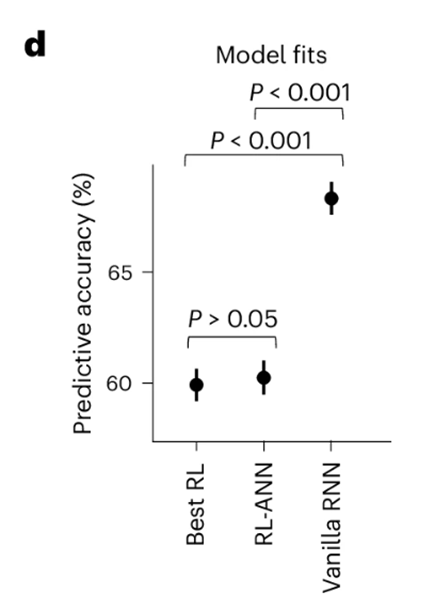
这表明，仅仅把 RL 的固定更新公式替换为灵活的 ANN，还不足以逼近人类行为；换言之，问题不只是更新规则不够灵活，而是架构本身仍然过于受限。
进一步，作者直接检查 RL-ANN 学出来的更新函数，发现它对 reward 和 previous value 的映射仍然大体是单调、近线性的，和 Best RL 很像。这说明：即便给予 RL-ANN 足够大的函数自由度，它在拟合人类行为时仍然回到了一个“近似经典 RL”的解。
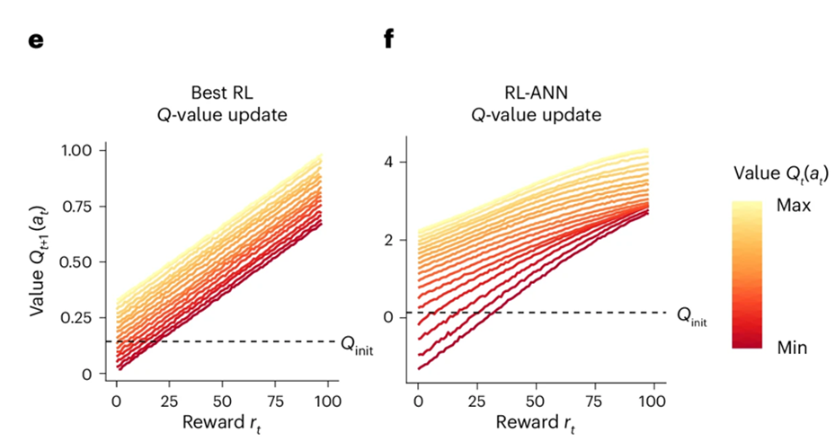
Content-ANN
RL-ANN 的结果表明，仅仅将 Best RL 中手工写定的更新公式替换为灵活的神经网络，并不足以显著提升模型对人类行为的预测。这说明，问题可能并不只是更新函数过于线性，而是 Best RL 的整体信息流本身仍然过于受限。
尤其是在 RL-ANN 中，reward module 仍然只根据当前奖励和被选动作自身的价值进行更新，action module 也只根据上一动作生成 perseveration 信号，而没有显式利用其他未选动作的状态信息。
为此，作者进一步提出 Context-ANN。该模型保留了 RL-ANN 的双模块结构，但在 reward module 中额外加入==上一时刻所有动作的价值向量 作为调制输入，在 action module 中额外加入所有动作的 perseveration 向量 == 作为调制输入。这样，模型在更新当前动作时，不再只依赖该动作本身的信息，而允许未被选择动作的状态参与调制，从而表达一类依赖于整体选项背景的学习机制。正文将这种背景因素概括为 context，也就是所谓的‘情境’，即同样一个奖励结果可能会因为其他可选动作的状态不同而被不同地处理。
对于 reward module，可以写成
其中：
- 是当前被选动作上一时刻的价值；
- 是当前奖励；
- 是包含所有动作价值的向量，用作 context 输入。
对应地，隐藏层和输出可写成
对于 action module，则类似地把全部动作的 perseveration 状态作为 context 输入：
最后仍然是
实验结果表明，Context-ANN 的预测表现显著优于 RL-ANN，说明在这类任务和这组模型比较下，引入“整体选项状态作为额外输入”能够更好地解释人类行为数据。
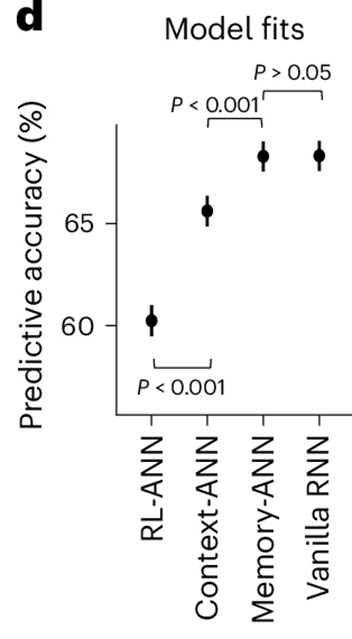
Important
注意推论一定要严谨，不能说人类可能纳入了类似情景的信息用于决策，而是说在这类任务和这组模型比较下，引入“整体选项状态作为额外输入”能够更好地解释人类行为数据。
但它仍然明显落后于 Vanilla RNN。这表明，引入 context processing 虽然捕捉到了经典 RL 架构之外的重要机制，但仍不足以完全解释人类行为。
Memory-ANN
一个更自然的推测是：模型缺失的并不只是“同时刻还有哪些选项”这类 context 信息，而是对更长时间范围内历史经验的表征能力。
换言之，人类的 reward learning 可能不仅依赖于当前选项之间的相对比较，还依赖于对过去 reward history 与 action history 的持续记忆。
沿着这一思路，作者进一步将关注点从 context processing 转向 memory processing，并提出了最终的 hybrid 模型 Memory-ANN。
Memory-ANN 的关键变化在于，它不再把 与 这类 choice variables 同时当作记忆变量，而是额外引入两个可以跨 trial 递归更新的隐藏状态 和 ，分别用于保存 reward history 与 action history 的高维表征。
具体来说，作者将 reward module 中原本依赖 与 的输入，替换为上一时刻 reward module 的隐藏状态 ；同时将 action module 中原本依赖 的输入，替换为上一时刻 action module 的隐藏状态 。
这样，Memory-ANN 就把 memory variables 与 choice variables 显式分离开来，从而能够表达一类基于丰富历史特征调制当前学习的模型。
为了便于理解，可以把 Memory-ANN 写成两条并行的循环通道。
- Reward channel
reward module 维护一个跨 trial 递推的隐藏状态：
然后用这个隐藏状态来产生新的 reward-based choice variable：
这里最关键的是：
在 Memory-ANN 中，新的 不再像经典 RL 那样显式依赖于上一时刻的 做增量更新；它更像是由“当前奖励 + 当前记忆状态”共同决定。
- Action channel
同样地，action module 也维护一个独立的隐藏状态：
并由此产生 action-history component：
- 最终选择
和前面的 hybrid 模型一样，最后还是把 reward 部分和 action 部分相加，形成 choice logits：
再经由 softmax 得到下一步动作概率：
尽管 Memory-ANN 已经引入了循环记忆状态，但它仍然比 Vanilla RNN 更受约束：reward processing 与 action processing 仍然彼此分离，未选动作仍按固定形式遗忘，两条通道的输出仍以简单加法组合。因此，它不是一个完全黑箱的 RNN，而是一个仍然保留一定清晰认知结构的混合模型。
结果表明，Memory-ANN 的预测准确率显著高于 Context-ANN，并且与 Vanilla RNN 没有显著差异。

这表明，一旦模型能够保留独立而灵活的 memory states，它就足以达到通用 RNN 的预测能力。由此，作者得出结论：在这项任务、这组候选模型以及这种比较方法之下，最能解释人类行为的数据生成假说，是人类依赖于对 reward history 和 action history 的丰富记忆，而不只是经典 RL 那种低维、增量式更新的标量价值表示。
机制解释
方法学验证
在正式解释获胜模型 Memory-ANN 的内部机制之前，作者先对整套解释方法做了方法学验证。
具体而言，他们区分了两类恢复任务：
model recovery 的目的，是检验模型比较流程是否具有“从行为反推生成模型”的能力。
假设有两个模型，A 和 B。
在人类数据上，A 的拟合效果比 B 更好。单看这一步，我们只能说：A 比 B 更贴近当前的人类行为数据。但这里还存在两种不同的可能。第一种可能是，A 的优势只是表面的。虽然 A 在这组数据上表现更好，但 B 其实也有能力学出类似的行为模式，只是在人类真实数据上没有恰好调到那个区域。
如果这时我们让 A 先生成一批模拟数据，再让 B 去拟合，结果发现 B 也能够把这批数据拟合得和 A 一样好，那么就说明：A 所体现出来的那些行为特征，并不是 A 独有的，B 也可以复现。
在这种情况下，A 在人类数据上的优势，更适合理解为一种预测表现上的优势，而不能太强地解释为机制上的本质差异。第二种可能是，A 的优势不是表面的，而是结构性的。
如果我们让 A 生成模拟数据，再让 B 去拟合，结果发现 B 无法把这批数据学出来，表现明显更差，那么这说明：A 生成的数据中包含了一些 B 无法表达或难以复现的行为特征。
这时就可以说，A 学到的不只是“拟合得更好”，而是学到了一些超出 B 表达范围的东西。也正因为这些特征在行为层面上无法被 B 模仿，我们才更有理由认为：A 和 B 在行为层面对应着可区分的计算结构。因此，model recovery 的作用，不是直接证明 A 就是真实机制，而是检验：
A 在人类数据上的优势，到底只是一个更会拟合的优势，还是对应着一组其他模型无法轻易模仿的行为特征。
作者让各候选模型分别作为已知真值生成模拟行为，再用与正文相同的训练—测试流程和同一组候选模型去重新拟合这些行为，检查 held-out loss 最优的模型是否能回到真实生成模型。由于灵活模型常常也能拟合简单模型生成的数据，作者进一步结合 simplicity prior，在拟合同样好的模型中偏向更简单者（在loss相对差不多的情况下）。
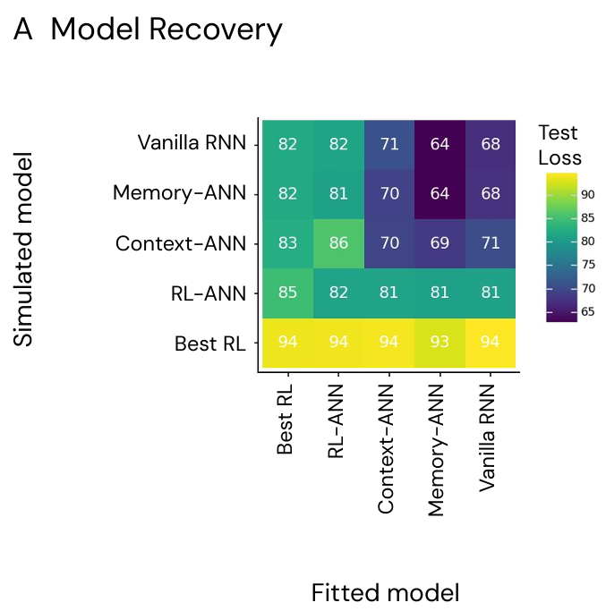
其结果表明，除 Vanilla RNN 外，其余模型在当前任务上大体都是可识别的。
与此同时，恢复矩阵还显示出一种近似非对称结构：较复杂模型通常可以复现较简单模型生成的行为，而较简单模型往往难以复现较复杂模型生成的行为；正是这种非对称的可模仿性，使得这些模型在行为上能够被区分。
function recovery 的目的，是验证作者用于解释模型内部机制的分析方法，能否在 ground-truth 已知的条件下恢复出模型真实执行的计算规则。换言之，它要排除这样一种可能：虽然某个模型在行为层面拟合成功，但它内部实现这一行为的机制，与真实生成模型的机制并不相同。
具体而言，作者先让已知模型生成模拟行为，再重新训练模型去拟合这些行为，并对拟合后的模型应用与正文完全相同的 probing 与 latent-state 分析。
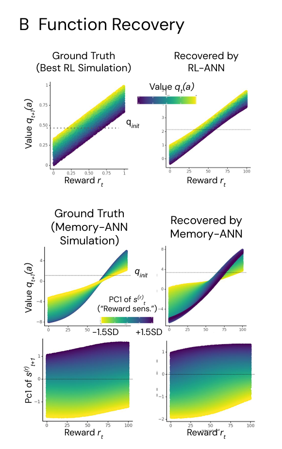
结果表明，无论是 Best RL 的近线性 Q-learning 更新，还是 Memory-ANN 中由 hidden state 调制的 sigmoidal reward-to-value mapping，以及随较大奖励逐渐上升的 reward-sensitivity 主成分，都能够被可靠恢复。
由此，作者论证其后面对人类拟合模型所做的机制解释，并非单纯的后验可视化，而是建立在一套经模拟实验验证过的算法恢复方法之上。
先拿已知 ground-truth 模型生成行为，再重新拟合模型，然后用和正文一样的 probing 方法把内部函数和 latent dynamics 画出来，看 recovered version 是否保留了 ground-truth 的关键结构特征。 比如 Best RL 那边，他们强调 recovered mapping 仍然是线性的、并按 分层；
Memory-ANN 那边，他们强调 recovered mapping 仍是 sigmoid-like，而且 PC1 对斜率的调制、以及 PC1 随较大奖励逐渐上升的模式也都回来了。
Important
重点是关键计算形态有没有被恢复出来。
reward module 的函数识别
由于作者创建的每个模型变体修改最大的部分都是reward module，所以在机制解释这一部分，作者也是针对此模块先做分析。
由于各个变体的奖励模块都是ANN，所以看网络的权重不是一个特别明智的方法，更常用的办法是使用探针。这一步，他们先从已经拟合好的人类行为模型里，把 reward module 的参数抽出来，重新搭一个和原 reward module 同形状的小 MLP，然后把学到的参数灌进去。接着，不是让整个模型继续在任务里跑，而是系统地扫描 reward module 的输入，看它会输出什么。
对 RL-ANN，他们扫描的是 reward 和 previous value；对 Memory-ANN，他们扫描的是 reward 和 hidden state。更具体地说，reward 在 1 到 100 分之间均匀采样；
Memory-ANN 的 hidden state 则来自 closed-loop 数据，也就是让模型在 teacher forcing 条件下跟着真实被试动作走一遍后，记录下 trial-by-trial 的 latent states，再对这些 hidden states 做 PCA，并沿着某个主成分方向采样，通常是沿 PC1 在均值上下 1.5 个标准差内取值。
最后，他们把每组输入送进这个抽出的 reward module，测量输出的 或 ，从而把“黑箱函数”画成可解释的输入—输出映射图。
这里作者并不是直接用随机 state 去试探，而是用在真实被试轨迹上实际访问过的 hidden states 来做 probing。
这样做的动机很合理，因为他们不是想看网络在任意数学输入上的行为，而是想看它在人类行为相关的状态空间里到底学到了什么函数。换句话说，他们关注的是“模型在真实认知轨迹附近如何计算”，而不是全空间上的抽象函数形状。
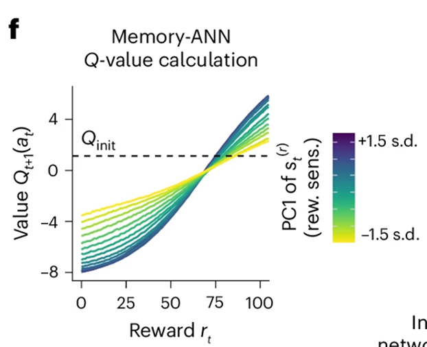
作者发现，Memory-ANN 的 reward module 把 reward 映射到新的 时，整体上是单调但近似 sigmoid 的：奖励越大，输出 Q 值越高，但这种关系不是线性的。
固定隐藏状态看
更关键的是，这个 reward module 不接收 previous value ，而且也无法从输入的 hidden state 中把它重构出来，所以它在计算新的 Q 值时并没有显式利用旧 Q 值。
于是，经典 RL 里那种“旧价值 + prediction error 增量修正”的更新逻辑，在这里被打破了。Memory-ANN 更像是在做一件非常直接的事：把当前 reward 映射成一个新的 Q 值，而不是在旧 Q 值基础上做增量更新。
作者甚至明确说，它不需要计算 prediction error，也不需要经典 delta-rule 的中间变量。
但如果故事只到这里，其实还不够。因为一个固定的 sigmoid 映射虽然已经不同于 RL，却仍然太简单，不足以解释为什么 Memory-ANN 能拟合出那么复杂的人类行为。
所以作者接着问第二个问题：这条 reward-to-value mapping 是固定的吗，还是会随着 latent state 改变？
为了回答这一点，他们在图 3f 里用颜色标出 hidden state 的第一主成分 PC1，发现同样的 reward，在不同 state 下会被映射成不同的 Q 值；也就是说，真正变化的不是 reward 本身，而是“当前系统如何解释这个 reward”的函数曲线。
作者把 PC1 解释为一种 reward sensitivity：当 PC1 变化时，整条映射曲线的陡峭程度会变化。于是，这里就出现了一个非常重要的机制结论：Memory-ANN 的表层 choice function 本身很简单，但它被一个更深的 latent memory state 持续调制。
然而，仅凭这一静态可视化，还不足以说明这种调制是否真正来源于任务中的状态演化。
于是，作者进一步转向 latent-state dynamics：考察在连续输入相同 reward 时，mapping 是否会随 trial progression 系统漂移，以及在经历不同 reward histories 之后，同一测试 reward 是否会被持续性地重新估值。通过这两类分析，作者将“state 能调制函数”进一步推进为“state 会随着时间和历史而演化，并持续改变 reward computation”。
第一个是时间维度上的 probing：如图g。
图 g 检验的是 reward module 在恒定输入下的内部动力学。作者将一个 fresh reward module 初始化在统一状态 ，然后在 150 个 trial 中重复输入同一个固定 reward ，观察输出的 如何随时间演化。结果表明，即使外部输入完全不变，Q 值也不会保持恒定，而是会经历明显的瞬态变化，并逐步收敛到由该 reward 水平决定的稳态。由于该模块并不显式接收 previous value，这种时间漂移只能来自内部隐藏状态的递推更新。因而，这一结果说明 Memory-ANN 的 reward computation 不是固定的 reward→Q 映射，而是一个由 latent state 持续调制、具有内在动力学的过程。不同 reward 不仅对应不同的即时输出，也会把系统驱动到不同的长期状态。
第二个是 history priming：
作者先用不同大小的恒定 priming reward 将 reward module 驱动到不同的内部状态，然后在这些不同 primed states 上重复输入同一个测试奖励 。
结果表明，同一个当前 reward 会因为先前 priming history 的不同而被映射成显著不同的 值；而且这种差异不会立刻消失，而是会在后续多个 trial 中逐步衰减并最终收敛。由于各条件下当前输入完全相同，这说明影响输出的不是 reward 本身，而是由既往 reward 环境塑造出来的 latent state。因而，图 h 证明的关键并不是模型简单地“记住了过去”，而是 reward history 会通过隐藏状态持续改变系统对当前 reward 的解释方式。

这两个结果非常关键，因为它们直接推动了作者下一步的行动。
到这时，作者已经不再满足于说“latent state 会调制 mapping”，而是必须进一步问：这个 latent state 里到底编码了什么？它是如何随奖励更新的？它具体通过哪些维度来影响后续计算？
hidden state 的表征解释
在完成 reward module 的函数识别之后，作者其实已经得到一个非常关键、但还不完整的结论：
Memory-ANN 的 reward computation 不是经典 RL 那种依赖旧 值和 prediction error 的增量更新，而是一种由 latent state 调制的 reward-to-value mapping。更具体地说，同样的 reward，在不同 latent state 下会被映射成不同的 值；而且这种映射还会随着任务进程和先前奖励历史而系统变化。
于是，问题就立刻发生了转移：如果真正赋予模型灵活性的不是表层 reward mapping 本身，而是背后那个不断变化的 latent state，那么我们接下来必须解释的就不再是“函数长什么样”，而是“这个 state 到底在表征什么”。
所以，hidden state 的表征解释并不是一个平行的新话题，而是 reward module 分析必然推出的下一步。
前一节已经说明：若把 固定住，reward module 只会实现一种较为僵硬的 reward-to-value 映射；真正让模型能够适应任务进程、适应奖励历史的，是 latent state 自身的演化。
作者因此顺着这个结果继续追问： 究竟编码了哪些来自 reward history 的信息？这种信息是单一的，还是具有内部结构？
在方法上，作者这一步不再像上一节那样直接 probing 一个输入—输出函数，而是改为先把 hidden state 本身“取出来”分析。
具体做法是：他们用每个参与者的真实动作序列去条件化已经训练好的 Memory-ANN，从而得到逐 trial 的一整套内部变量轨迹，包括 、、 和 。
接着，他们把 reward channel 的高维隐藏状态 拿出来做主成分分析，试图从这个 32 维的内部表征中提炼出最主要、最可解释的变化轴。
也就是说，上一节是问“state 如何调制函数”，这一节则改成问“state 自己的主要变化维度是什么，它们各自代表什么认知内容”。
这张图把 hidden state 的“功能”和“动力学”连起来了：A/B 行说明不同 state PCs 分别怎样调制 reward-to-Q 的 sigmoid 映射，C 行说明这些 PCs 自己又怎样被 reward 更新。
这里对单个 PC 的可视化，是在人为固定其他 PC 的前提下做的功能分解，用来识别各主成分分别怎样调制 reward-to-Q mapping；它不意味着模型真实运行时只有一个 PC 单独变化。
另外，PC2 虽然在图形上与 PC1 有相似之处，但“reward sensitivity”这一命名并不是按外观给出的，而是综合了它对映射斜率的调制、其随 reward 的累积更新规律，以及与行为指标的对应关系后，才特异性地落在 PC1 上。
结论是，Memory-ANN 的 hidden state 不是单一记忆变量，而是一组具有不同计算角色和不同积分时间尺度的内部通道；其中 PC1 最像 reward sensitivity。这里给出了更多的pcs对于奖励更新函数的调制效果。
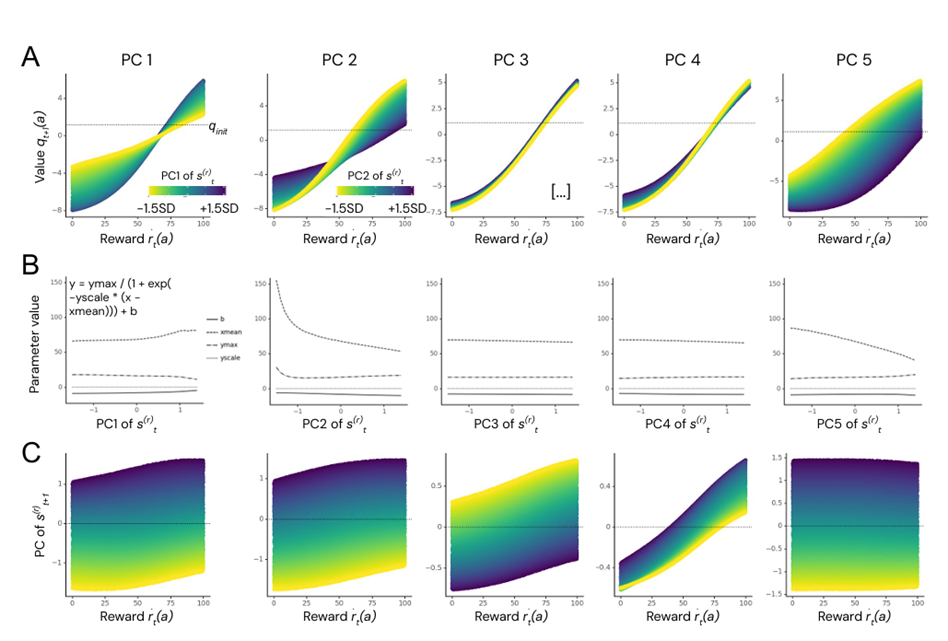
补充材料则进一步分析了更多主成分，说明隐藏状态并不是单一标量，而是包含多种时间尺度的成分。
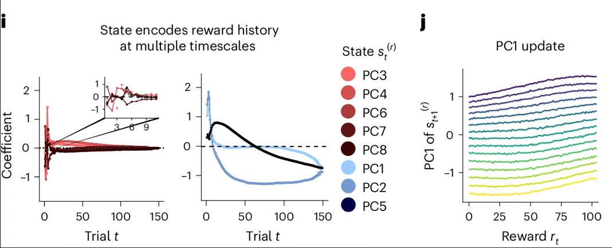
先看 i 图。它本质上是在做一种 lagged decoding / 滞后回归：只看当前时刻某个 state PC，去回归过去第 kkk 个 trial 的 reward，看当前 PC 对多远以前的 reward 还有信息。纵轴是回归系数，横轴是 lag。
设当前某个主成分记为 ，过去奖励记为 。
对于每一个滞后步数 ，都单独做一次回归，例如：
这里：
- ：当前时刻某个 state PC 的值
- ： 个 trial 之前的奖励
- ：过去第 步的奖励，对当前 state 的线性关系强度
然后把不同 下得到的 画成一条曲线。
这条曲线就是“当前 state 对过去 reward 的敏感分布”。
左边那组红色 PC（PC3/4/6/7/8）最大的系数都集中在最靠近当前的几个 trial，上面的 inset 只是把前几步放大给你看；这说明它们主要编码最近几次 reward，属于短时程成分。右边那组蓝色 PC（PC1/2/5）则不同，它们的系数会在很长一段 trial 范围内都保持非零，甚至跨几十到上百个 trial 才慢慢衰减，这说明这些维度保留的是更长时间尺度的 reward history，更像长期背景或慢变量。也就是说，state 不是只记“刚刚发生了什么”，而是同时包含了快、慢两类历史摘要。
这里一个很容易误读的点是：不要过度解读系数的正负号本身。正负更多是在说明“过去 reward 会以什么方向影响当前 PC”，但这张图最关键的不是符号，而是时间支撑范围有多宽。
时间支撑窄，说明它只管最近几步；时间支撑宽，说明它在整合长期历史。真正的结论是：不同 PCs 编码 reward history 的时间窗口不同，因此 hidden state 具有 multiple timescales。
再看 j 图。这张图横轴是当前 ，纵轴是更新后的 PC1，也就是 的第一主成分。你可以先只看整体趋势：reward 越大，更新后的 PC1 越高，而且关系近似单调、近线性。 这说明 PC1 不是一个固定标签，而是会被每一步 reward 持续推动、逐步积累的内部变量。你 report 里已经把这一点概括成“PC1 会随着 incoming rewards 呈单调、近线性的累积变化”。
图 j 里那一组平行的彩色曲线，还告诉你第二件事：更新后的 PC1 不只取决于当前 reward，也取决于更新前系统原来处在哪个 PC1 水平。 所以它的更新更像
而不是单纯
这说明 PC1 是一个真正的递推状态变量，不是一次性的输入响应。也正因为它既会随 reward 单调累积，又会进一步去调制 reward→Q 的映射斜率，作者才把 PC1 解释为一种 reward sensitivity。
这样一来，作者就不再只是笼统地说“模型有记忆”，而是把这件事具体化成：reward hidden state 由多时间尺度的表征共同组成，其中有些维度直接调制当前价值计算，有些维度更像是在塑造未来的内部动力学。
这一步的理论意义也非常重要。因为一旦 hidden state 可以被解释为这种分层的、多时间尺度的 reward-history representation，那么前一节里看到的那些现象——同样 reward 在不同状态下对应不同 Q 值、同样 reward 随 trial progression 被赋予不同意义——就不再只是“黑箱里某个状态变量在调制输出”，而是可以被理解为：模型在利用对过去奖励历史的丰富记忆，动态改变当前 reward 的解释方式。
换句话说，reward module 的函数识别告诉我们“表层规则不是固定的”；而 hidden state 的表征解释则进一步告诉我们“为什么它不是固定的”，因为模型内部并不是只存一个当前值，而是在并行维护多种长短程历史信息。
而这个结果又会自然推动作者走向下一步。因为到这里，hidden state 已经不再只是一个内部数学对象，而是一个具有可解释表征内容的变量了。接下来最自然的问题就变成：这些被识别出来的表征维度，是否真的和外显行为有关？
例如，如果 PC1 真的是 reward sensitivity，它是否会系统地影响 stay probability、response time 之类的行为指标？
如果 long-term 与 short-term components 真有不同功能，它们是否会在行为层面留下不同痕迹？
所以，hidden state 的表征解释这一节，最后会非常自然地把作者推进到“latent state 与行为的联系”这个话题：先解释 state 记了什么，再检验这些记忆是否真的在驱动可观察行为。
latent state 与行为的联系
作者在这里的动机其实很自然。前面 PCA 得到的 PC1 被解释为 reward sensitivity，而且它还能调制 reward-to-value mapping 的斜率；但如果这种“reward sensitivity”只停留在模型内部，那它仍然有可能只是一个漂亮的内部表征，而不是认知机制本身。为了把机制解释往前推进一步，作者必须证明：当这个 latent dimension 变化时，模型所刻画的人类行为策略也会跟着系统变化。 只有这样，latent state 才不只是网络里的中间量，而可以被视为与行为有功能联系的认知变量。
具体方法上，作者不是重新去看函数图，而是把训练好的 Memory-ANN 条件化在每个参与者的真实动作序列上，提取逐 trial 的内部变量轨迹，包括 、、 和 。然后他们对 reward channel 的隐藏状态 做 PCA，并重点关注第一主成分 PC1。
接下来，他们把这个 PC1 和两个最直接的行为指标联系起来：
- 一是下一 trial 是否重复当前动作，也就是 stay probability；
- 二是反应时 RT。
这个设计很讲究，因为 stay 是最直接的 choice-policy 指标，而 RT 则更像是决策动力学的外显窗口。
先看 stay behavior。作者考察的是：在不同 reward magnitude 下，PC1 高低是否会系统改变“拿到这个奖励后下次还选不选同一个动作”的概率。结果很清楚：PC1 会调制 reward 到 stay probability 的映射。
在图 3k 中，不同 PC1 水平对应着不同的 reward–stay 关系：当 PC1 较高时，高奖励后的重复选择概率更高、低奖励后的重复选择概率更低，因此整条 reward–stay 曲线更陡；当 PC1 较低时，这种关系更平缓。作者对各 reward bin （PC1 ≤ 0 时的 stay 频率 vs PC1 > 0 时的 stay 频率）做了配对、被试内、Bonferroni 校正的双侧 t 检验，结果显著。这说明 PC1 并不是一个与 reward 同步起伏的被动读出量，而是与 reward 对后续 stay 倾向的影响强度系统相关，从而为将 PC1 解释为 reward sensitivity 提供了行为层面的支持；不过，这一步本身仍属于相关性证据，而非因果证明。
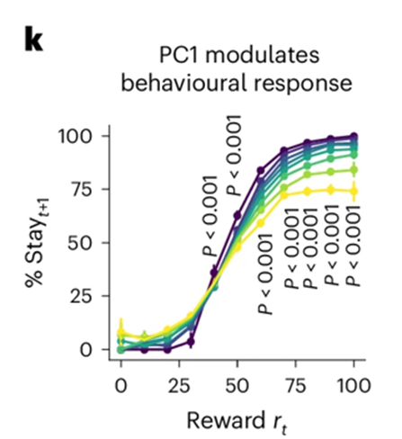
再看 RT。作者进一步发现，PC1 还能预测反应时：他们把 RT 做对数变换，并在 block 内做均值中心化，然后用 mixed-effects linear regression 检验 PC1 与 RT 的关系，结果显著。也就是说，latent state 的变化不仅反映在“选哪个动作”上，也反映在“做决定的速度”上。这个结果很重要，因为它表明 latent state 的行为关联不是局限在 choice outcome 这一条线上，而是延伸到了决策过程本身。
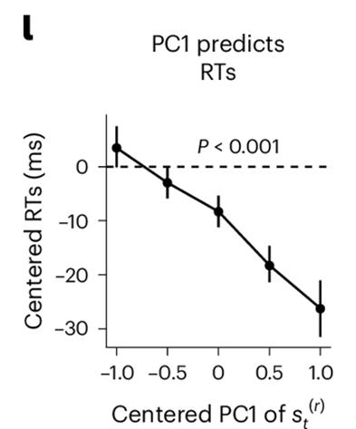
这里还有一个更深的点，在补充材料里作者专门澄清了：这种 latent state 与行为的关系，并不只是静态的个体差异。换句话说，不是说“有的人 PC1 天生更高，所以总是更爱 stay”；相反，作者强调，在同一个参与者内部，随着任务进行，latent state 的变化能够捕捉到行为策略的逐步调整。
补充材料明确说，这些 within-participant 的变化说明 Memory-ANN 的 latent state 更像是在刻画参与者在任务中逐渐调整行为的认知机制，而不只是反映个体差异参数。这个澄清很关键，因为它把 latent state 从“人格标签”变成了“在线更新的内部状态”。
所以，这一节最核心的结果可以压成一句话：reward hidden state 中的 PC1 不仅是一个可解释的内部表征维度，而且它对人类行为具有直接的行为相关性——它会系统调制 stay probability，并能预测 response time。 这样一来，前一节关于 hidden state 表征内容的解释，就不再只是内部可视化，而是和外显行为真正接上了。
但也正因为如此，作者接下来必须再往前走一步。因为到这里为止，latent state 与行为之间的关系仍然是相关性的：我们看到 PC1 高低和行为变化同步，但还不能仅凭这一点断言 PC1 的变化“导致”了行为变化。
于是，这个结果自然推动作者进入下一步：对 latent state 进行因果操纵。 也就是不再只是读取和关联这些内部状态，而是主动注入、固定或扰动某些 state 维度，看看模型的 值计算和行为模式会不会随之改变。只有做到这一步，作者才能把“行为相关”进一步推进为“机制上有因果作用”。
对 latent state 的因果操纵
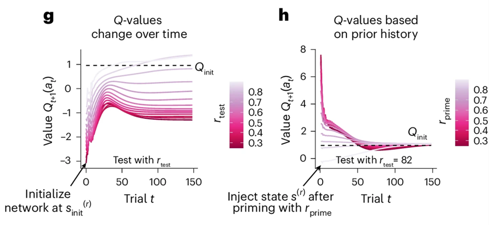
作者首先做的是对整个 reward state 的状态注入。具体做法是，先用一串长度为 150 的恒定奖励序列去“预热” reward module，让它分别适应不同的奖励背景，从而得到一系列具有明确上下文含义的隐藏状态；然后再新建一个 fresh reward module，把这些已经形成的 state 作为初始状态注入进去，并在之后连续 150 个 trial 中都输入同一个“中性”测试奖励 。这样，唯一真正变化的，就是一开始被注入的 latent context。结果非常清楚：同样一个 82 分，在“贫乏情境”中预热出来的 state 下，会被赋予更高的 Q 值；而在“丰富情境”中预热出来的 state 下，则会被赋予更低的 Q 值。并且这种差异不会立刻消失，而是能持续大约 50 到 100 个 trial。
作者据此得出一个很强的结论： 的一个关键功能，就是根据既有奖励背景去重新标定当前 reward 的价值计算方式。也就是说，latent state 不是被动缓存过去，而是在主动设定“当前这个 reward 应该被如何解释”。
这一步很重要，因为它把前面正文图 3h 里“同一 reward 对应不同 Q 值”的现象，从描述性结果推进成了真正的干预证据：不是 reward 本身变了，而是你只要换一个 state，reward module 的输出就会变。
于是，作者可以更有把握地说，reward computation 的上下文化并不是表面现象，而是由内部记忆状态因果地产生的。
不过，整体 state 仍然太粗。它能告诉我们“state 整体有因果作用”，但还不能回答“究竟是 state 的哪些成分在起作用”。
因此，作者继续做了第二类实验：对 PCA 分解后的单个主成分做定向扰动。这里他们说明，由于技术原因，无法直接在最初那组训练权重上完成这类实验，所以补充分析里重新拟合了一组表现相似、且能复现主结果的新模型；这些模型的整体行为与正文一致，但 individual PCs 的编号不必与正文逐一对应。
在具体操作上，作者先像前面一样，用 150 个相同奖励让 reward module 进入一个稳定状态；然后在第 151 个 trial，人为把某一个 PC 改成极端值，也就是把它直接推到“均值加或减 10 个标准差”，同时保持其他 PCs 不变。
之后，再在后续 150 个 trial 中持续输入与先前相同的奖励，观察 Q-value calculation 会如何被扰动。这个设计的关键在于：它不是重新训练模型，也不是换一段新的 reward history，而是在保持其余部分不变的前提下，单独操纵某一个 state 方向，从而尽可能把该方向的功能隔离出来。
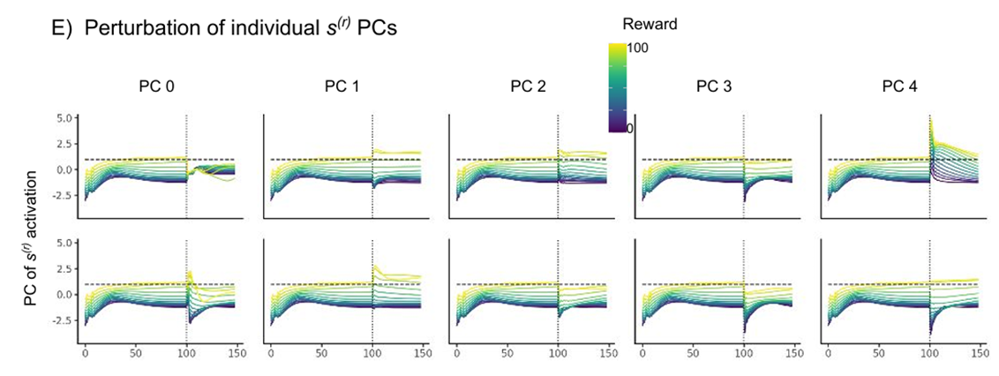
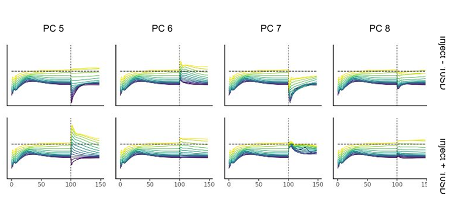
结果表明，不同 PCs 的功能确实不同，而且很多扰动会带来明显的短期或长期后果。
比如，当作者把PC0的激活大幅压低时，所有 reward magnitudes 在下一 trial 上都被映射成相近而偏低的 Q 值，之后才慢慢恢复出对不同奖励的区分；这说明该维度与区分奖励大小有关。相反，如果把这一维度大幅抬高，reward 之间的区分会被夸大，但这种效应恢复得更快。
又如，对 PC4 和 PC5 的极端注入会让所有 reward 对应的 Q 值整体上升或整体下降，而且二者呈现出相反模式。
作者因此总结说， 的不同 PCs 会以不同方式影响后续的 Q-value calculation，而且这些影响既可能是短时的，也可能延续相当长一段时间。
到这里，作者已经不再只是说“PC1 像 reward sensitivity”“某些 PCs 与历史奖励有关”，而是能够进一步论证：latent state 的不同成分本身就是 reward computation 的因果变量。
换句话说，Memory-ANN 并不是先有一个固定算法，再把hidden state 当作无关紧要的中间量；
相反，隐藏状态的具体位置本身就决定了 reward module 接下来会如何把外部奖励映射成内部价值。
于是，前面几节串起来之后，逻辑就很完整了：reward module 不是经典 delta-rule；它的计算受 latent state 调制；这个 latent state 编码了多时间尺度的 reward history；而且只要你直接干预这个 state，后续的 Q 值计算就会被系统改写。
特殊人类行为的捕捉
仅仅说明 Memory-ANN 在 held-out 被试上的预测准确率更高，还不足以揭示它究竟比经典 RL 多解释了什么。
为此，作者进一步比较了各模型能否复现人类行为中那些具有明确时序结构的特殊模式。
这里的关键问题不再是“哪个模型 loss 更低”，而是“哪个模型真正抓住了人类选择序列中的组织方式”。
作者让各拟合模型在与人类相同的任务上进行 open-loop 模拟，然后把模型生成的行为与人类行为逐项对照，重点考察奖励变化趋势、跨 trial 的重复与循环模式，以及整段选择序列的整体结构。
首先，在对奖励变化趋势的捕捉上，人类并不是简单地依据某一动作的运行平均收益来做决定。
作者选取了连续两次选择同一动作的 trial 对，考察在给定最近一次奖励 的条件下，前一次奖励 的变化会如何影响下一步是否继续选择该动作。
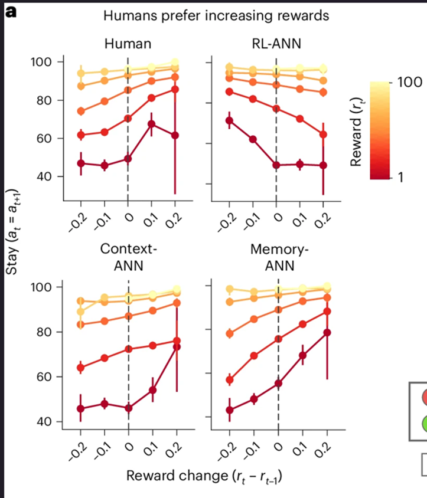
结果表明，人类更偏好那些“最近奖励正在上升”的动作，也就是说，在当前奖励相同的情况下，如果更早一次奖励更低、最近一次奖励更高，被试更倾向于继续选择该动作，仿佛在利用局部上升趋势来预测未来。
相比之下，Best RL 与 RL-ANN 更像是在依赖 reward 的运行平均，因此反而偏好“更早一次奖励更高”的情形。只有 Context-ANN 和 Memory-ANN 能在定性上复现人类对奖励上升趋势的敏感性。这个结果说明，人类行为所依赖的信息并不只是一个低维平均值，而包含了更细的历史结构。
其次，在跨 trial 的动作序列上，人类表现出明显的多步结构，而不只是逐 trial 独立地做局部贪婪选择。作者特别考察了两类典型模式：一类是 multiple repeats，即长串重复同一动作，例如 AAAA；另一类是 cyclic responses，即在短时间内系统地轮流尝试多个动作，例如 ABCD。
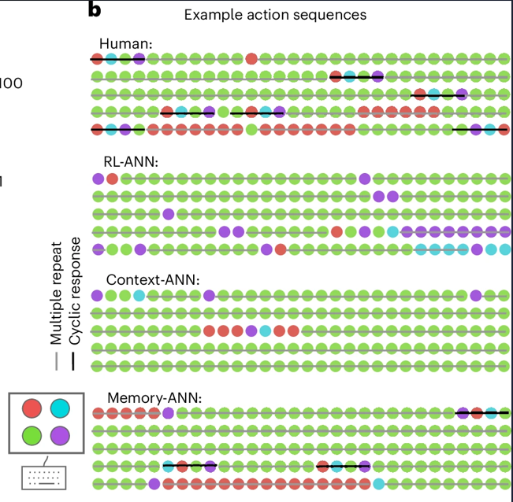
结果显示，人类对这两类模式都有显著偏好：一方面会在一段时间内持续利用当前认为最优的动作，另一方面又会穿插短暂而系统的循环探索。Memory-ANN 能较好捕捉这种“长串利用—短暂系统探索”的交替结构，而其他较简单模型则明显较弱。补充分析进一步表明，Simple RL 和 Best RL 基本无法复现更长的序列模式，RL-ANN 和 Context-ANN 最多只能较好地抓住长度 2 左右的局部序列，而只有 Memory-ANN 和 Vanilla RNN 才能在定性上接近人类完整的重复偏好谱系。
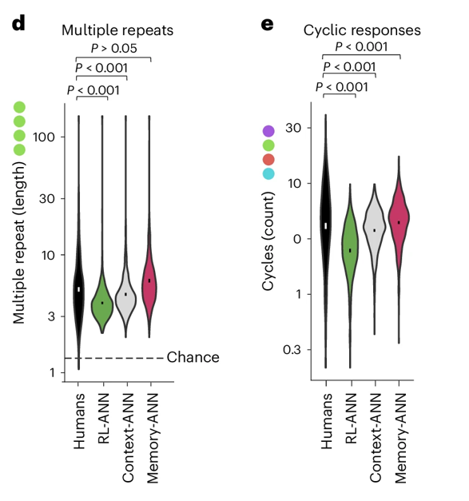
再次，作者没有只停留在若干可见模式的层面，而是进一步考察整段行为序列是否具有更高层的组织结构。为此，他们对所有动作序列计算了基于 Lempel–Ziv–Welch 算法的压缩率：序列越有重复子结构、越有规则，就越容易被压缩。
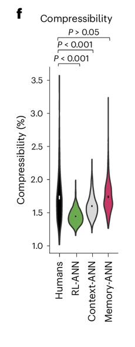
讨论
- 本文表明，经典 Q-learning 家族不足以充分解释人类 reward learning。相比之下，Memory-ANN 在保持可解释结构的同时，达到了接近通用 RNN 的拟合能力，说明人类学习并不只依赖一组增量更新的决策变量，而更可能依赖一组不直接驱动选择、但持续调制价值更新的潜在记忆变量。这些记忆变量同时跟踪 reward history 与 action history，并具有多时间尺度结构。
- 从理论上看，结果支持一种分层且模块化的 reward-learning 架构：reward-based learning 与 action-based learning 可被分解为平行模块，而每个模块内部又包含“深层记忆表征”与“浅层选择变量”两个层次。这意味着，即便在表面上较简单的 bandit 任务中，人类也可能依赖比经典 RL 更丰富的层级化算法。
- 从方法上看，本文的重要贡献不只是提出一个更优模型，而是展示了一条可推广的研究路径：在大规模行为数据上，将假设驱动的架构搜索与数据驱动的函数逼近结合起来，从而在“预测性能”与“机制可解释性”之间取得平衡。这为认知建模中的 theory discovery problem 提供了一种可操作的解决思路。
- 但本文的结论仍有边界。首先，作者拟合的是population-level model，因此对个体差异的刻画较弱；其次，Memory-ANN 相对 Best RL 的优势，原则上也可能部分反映其对参与者间差异的更好吸收，而不完全是对个体内部学习过程的更精确刻画。作者虽然做了补充分析以降低这种可能，但这一点仍是后续工作需要进一步澄清的问题。
- 因而，更稳妥的结论不是“Memory-ANN 就是真实机制”，而是：在当前任务、数据规模与候选模型集合下，多时间尺度的潜在记忆系统比经典低维 RL 架构更能解释人类行为，并为后续研究个体差异、任务迁移以及神经实现提供了更有前景的算法框架。